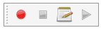

Macros/ro
Introduction
Macrocomenzile reprezintă o modalitate convenabilă de a crea acțiuni complexe în FreeCAD. Pur și simplu înregistrați acțiunile, salvați-le sub un nume și repetați-le ori de câte ori doriți. Deoarece macrocomenzile sunt în realitate o listă de comenzi python, puteți să le editați și să creați scripturi foarte complexe.
While Python scripts normally have the .py extension, FreeCAD macros should have the .FCMacro extension. A collection of macros written by experienced users is found in the macros recipes page.
See the Power users hub to learn more about the Python programming language, and about writing macros. In particular, you should start with these pages:
Cum funcționează
Dacă activați consola de ieșire (Meniu Editare -> Preferences -> General -> Macros -> Afișează comenzi script în consola python), veți vedea că în FreeCAD, fiecare acțiune pe care o faceți, de exemplu apăsând un buton generează o comandă python. Aceste comenzi sunt ceea ce poate fi înregistrat într-o macrocomandă. Instrumentul principal pentru realizarea macrocomenzilor este bara de scule a macroco-urilor: 
{kind=link}
Enable the console output in the menu Edit → Preferences → Python → Macro → Show scripts commands in python console. You will see that in FreeCAD, every action you do, such as pressing a button, outputs a Python command. Those commands are what can be recorded in a macro. The main tool for making macros is the macros toolbar: . On it you have 4 buttons: Record, stop recording, edit and play the current macro.
Este foarte simplu de utilizat: Apăsați butonul de înregistrare, vi se va cere să dați un nume macro, apoi efectuați unele acțiuni. Când ați terminat, faceți clic pe butonul de oprire și acțiunile dvs. vor fi salvate. Acum puteți accesa dialogul macro cu butonul de editare:
{kind=link}
Acolo puteți gestiona macrocomenzile, puteți șterge, edita, duplica, instala sau crea altele noi de la zero. Dacă editați o macrocomandă, aceasta va fi deschisă într-o fereastră de editor unde puteți modifica codul acesteia. Noile macrocomenzi pot fi instalate folosind butonul Addons ... care se leagă de Addon Manager.
Exemplu
Apăsați butonul de înregistrare, dați un nume, să zicem "cilindru 10x10", apoi, în Part Workbench, creați un cilindru cu raza = 10 și înălțimea = 10. Apoi apăsați butonul "stop recording". În dialogul de editare a macrocomenzilor, puteți vedea codul python care a fost înregistrat și, dacă doriți, modificați-l. Pentru a executa macrocomanda, apăsați butonul de execuție din bara de instrumente în timp ce macro-ul dvs. este în editor. Sunt întotdeauna salvate pe disc, astfel încât orice schimbare pe care o faceți sau orice macro nouă pe care o creați, va fi întotdeauna disponibilă data viitoare când porniți FreeCAD.
Press the record button, give a name, let's say "cylinder 10x10", then, in the Part Workbench, create a cylinder with radius = 10 and height = 10. Then, press the "stop recording" button. In the edit macros dialog, you can see the python code that has been recorded, and, if you want, make alterations to it. To execute your macro, simply press the execute button on the toolbar while your macro is in the editor. You macro is always saved to disk, so any change you make, or any new macro you create, will always be available next time you start FreeCAD.
Personalizare
Desigur, nu este practic să încărcați o macrocomandă în editor pentru a o folosi. FreeCAD oferă o modalitate mai bună de a utiliza macrocomanda, cum ar fi atribuirea unei comenzi rapide de la tastatură sau introducerea unei intrări în meniu. Odată ce ați creat macrocomanda, puteți face acest lucru prin meniul Instrumente -> Personalizare:
Of course it is not practical to load a macro in the editor in order to use it. FreeCAD provides much better ways to use your macro, such as assigning a keyboard shortcut to it or putting an entry in the menu. Once your macro is created, all this can be done via the Tools → Customize menu.
{kind=link}
Customize ToolbarsÎn acest fel, puteți face ca macrocomanda să devină un instrument real, la fel ca orice instrument standard FreeCAD. Acest lucru, adăugat la puterea scripting-ului Python în cadrul FreeCAD, face posibilă adăugarea ușoară a propriilor instrumente la interfață. Citiți pagina Scripting dacă doriți să aflați mai multe despre scrierea Python ...
See Customize Toolbars for a more detailed description.
Crearea de macrocomenzi fără înregistrare
How to install macros De asemenea, puteți copia / lipi direct codul python într-o macrocomandă, fără a înregistra acțiunea GUI. Pur și simplu creați o macrocomandă nouă, editați-o și inserați-vă codul. Apoi puteți salva macro-ul dvs. în același mod în care salvați un document FreeCAD. Data viitoare când porniți FreeCAD, macroul va apărea sub elementul "Macro instalat" din meniul Macro.
You can also directly copy/paste python code into a macro, without recording GUI action. Simply create a new macro, edit it, and paste your code. You can then save your macro the same way as you save a FreeCAD document. Next time you start FreeCAD, the macro will appear under the "Installed Macros" item of the Macro menu.
See How to install macros for a more detailed description.
Depozitul de Macrocomenzi
Vizitați pagina Macros recipes pentru a alege unele macrocomenzi utile pentru a adăuga instalarea FreeCAD.
There are two main places for macros. The first one is the official peer-reviewed macro repository on GitHub. The second one is the Macros recipes page from which you can pick some useful macros to add to your FreeCAD installation. Macros from both repositories can be installed via the Addon Manager directly from FreeCAD.
Link-uri
Tutoriale
You can manually install extensions, however, it is much simpler to just use the Addon Manager.
- FreeCAD scripting: Python, Introduction to Python, Python scripting tutorial, FreeCAD Scripting Basics
- Modules: Builtin modules, Units, Quantity
- Workbenches: Workbench creation, Gui Commands, Commands, Installing more workbenches
- Meshes and Parts: Mesh Scripting, Topological data scripting, Mesh to Part, PythonOCC
- Parametric objects: Scripted objects, Viewproviders (Custom icon in tree view)
- Scenegraph: Coin (Inventor) scenegraph, Pivy
- Graphical interface: Interface creation, Interface creation completely in Python (1, 2, 3, 4, 5), PySide, PySide examples beginner, intermediate, advanced
- Macros: Macros, How to install macros
- Embedding: Embedding FreeCAD, Embedding FreeCADGui
- Other: Expressions, Code snippets, Line drawing function, FreeCAD vector math library (deprecated)
- Hubs: User hub, Power users hub, Developer hub